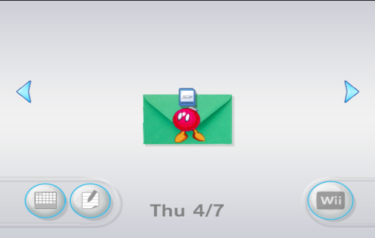

Wilbrand
Wilbrand使用Wii留言板触发漏洞
你需要
- 一张不超过2G的SD卡或不超过32G的SD卡(仅系统版本4.0及以上),并用SD Memory Card Formatter 备用下载 格式化SD卡
- 一台系统版本为3.0-4.3的Wii
- Wilbrand
步骤
- 打开Wii,前往Wii设置-互联网-主机信息,记下MAC地址

- 打开Wilbrand,按照提示输入MAC地址,日期,系统版本和SD卡根目录
- 从这里获取HackMii,将boot.elf复制到SD卡根目录
- 将SD卡插入Wii
- 打开Wii,点击Wii留言板,您应该会看见一个绿色的炸弹信
- 请确保Wii的日期正确
- 请尝试往前或往后翻几天
- 请确保使用小于或等于32G的SD卡
- 请确保选择了正确的系统版本,在Wii设置的右上角

- 点击绿色的炸弹信
如果不成功，请使用其它漏洞
感谢WiiBrew和Wii Guide!